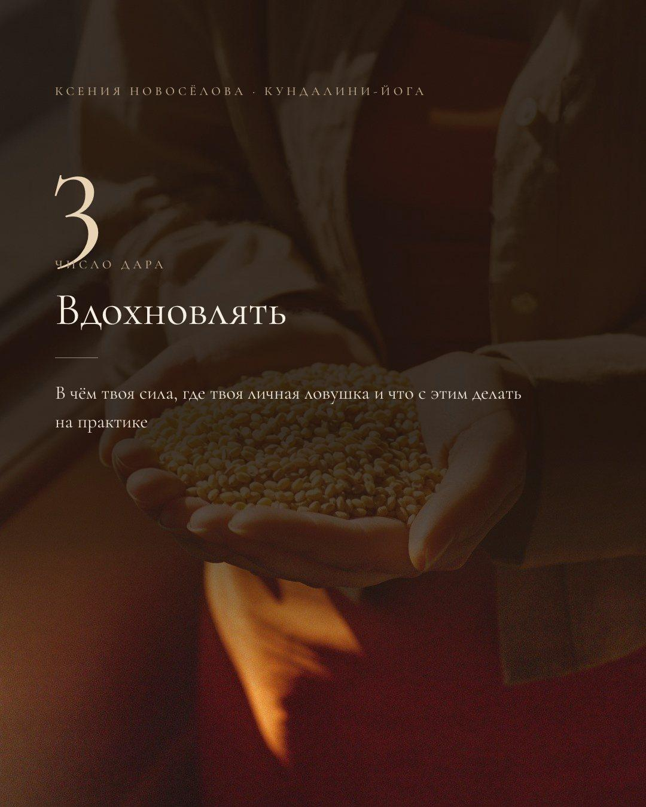
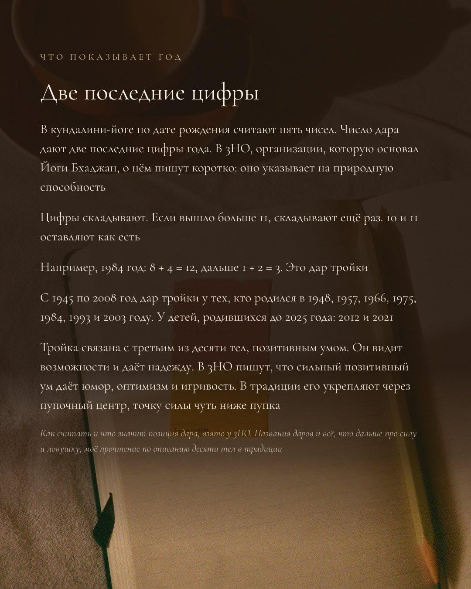
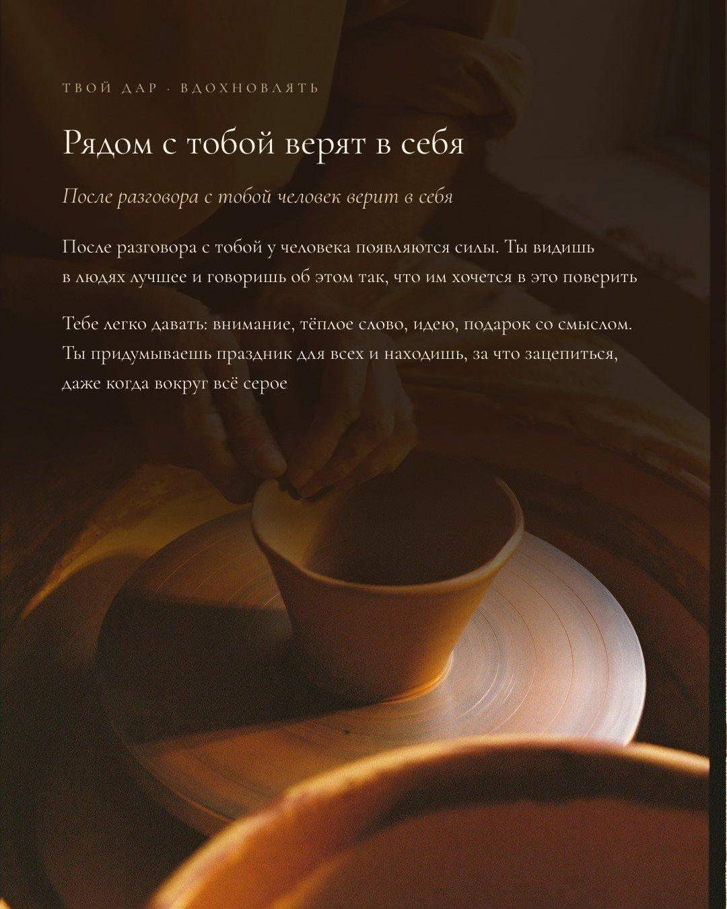
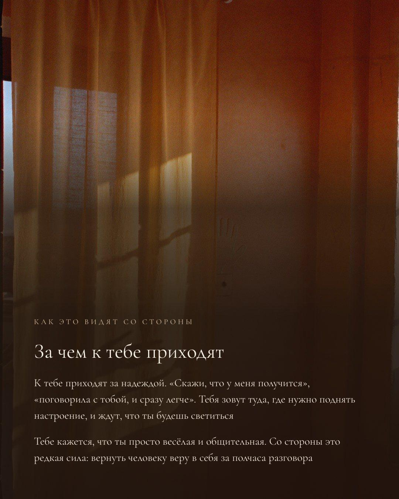
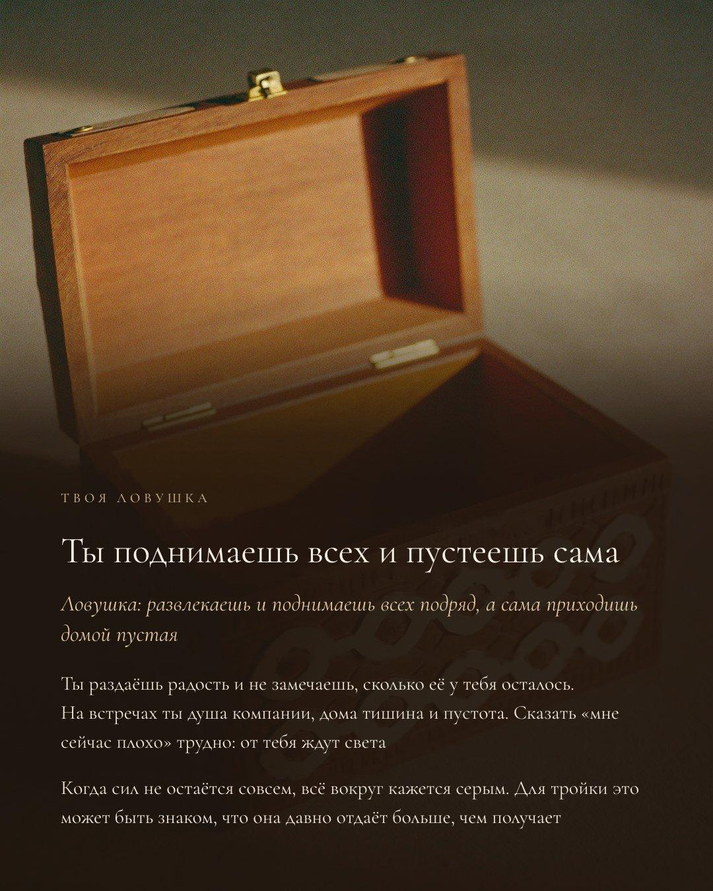
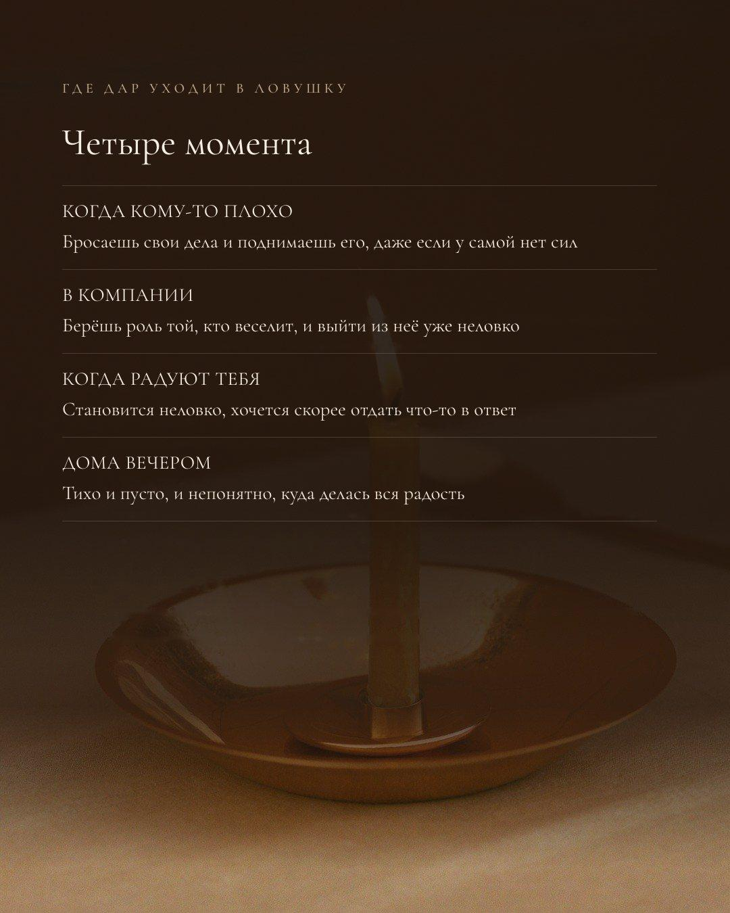
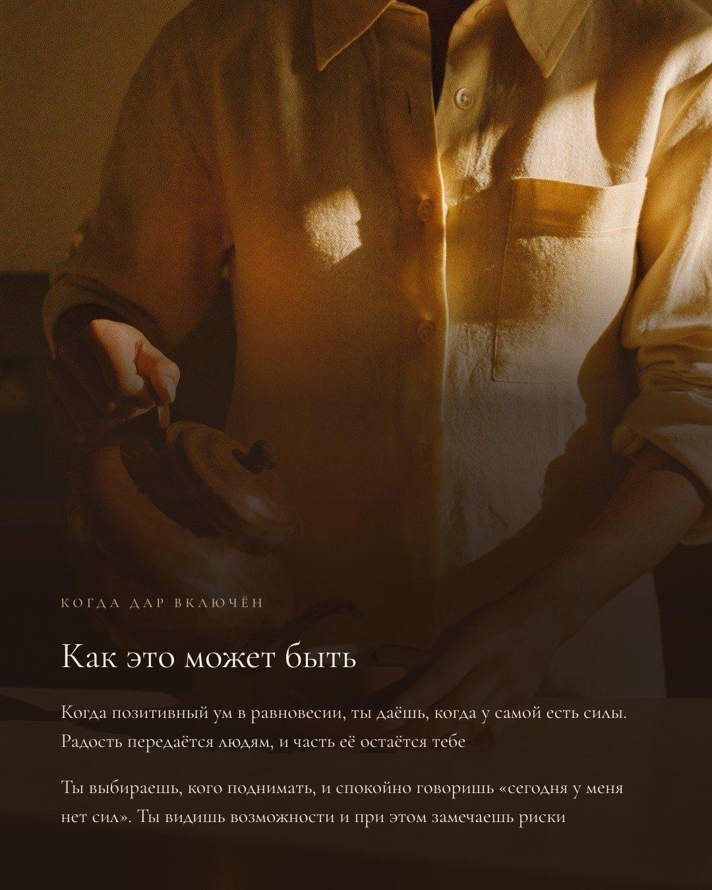
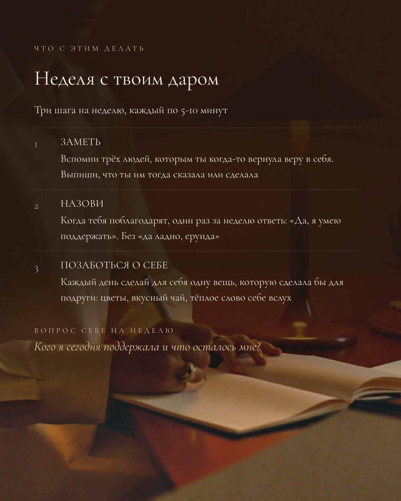
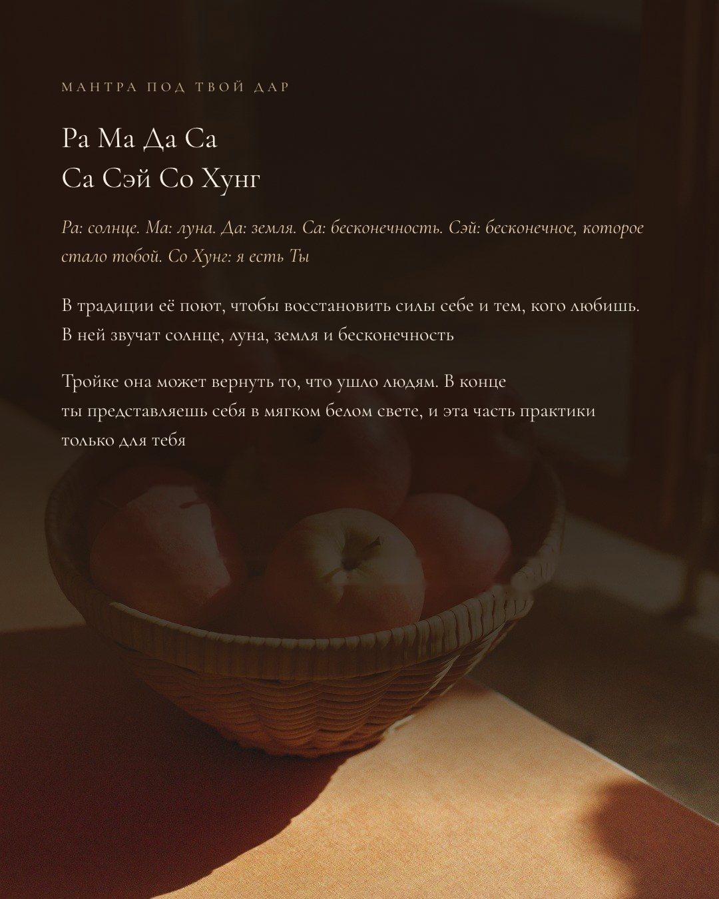
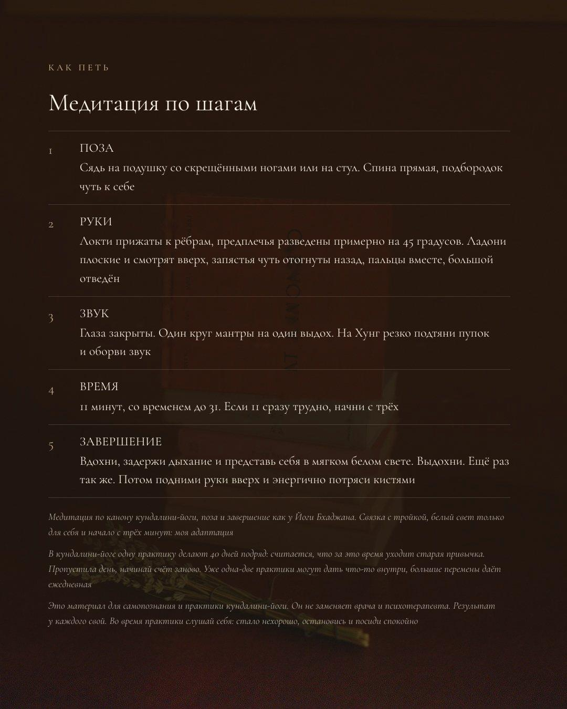
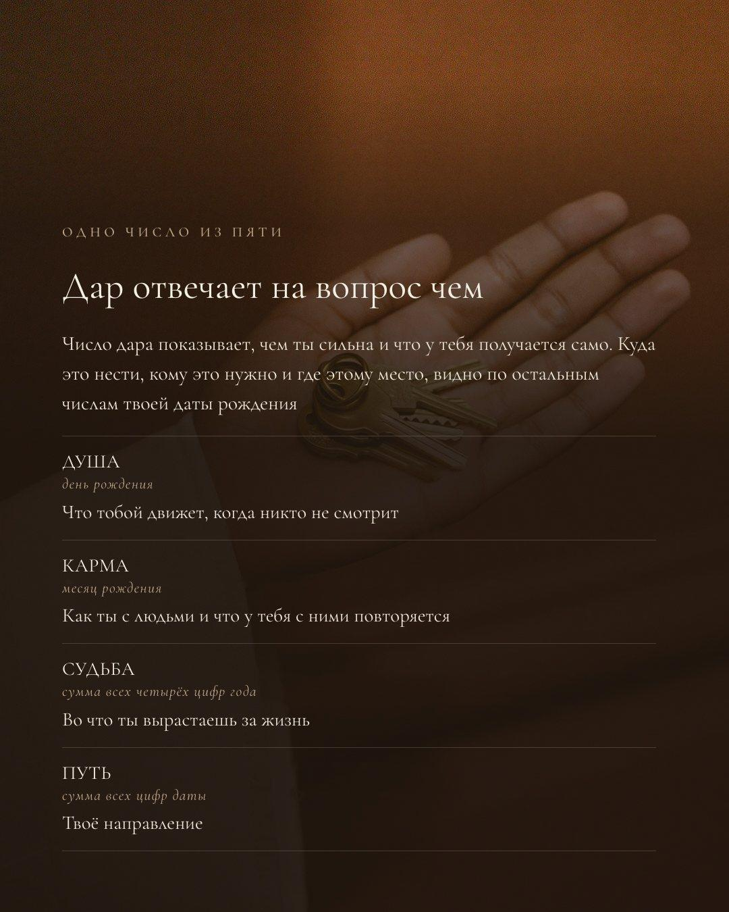
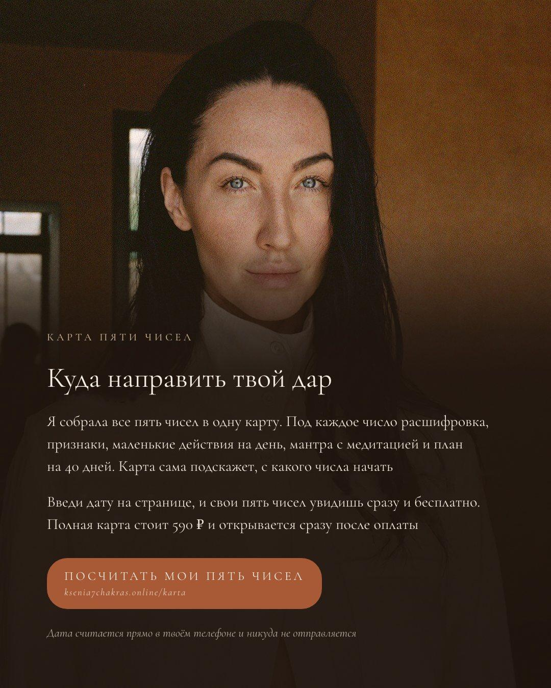
Ещё четыре числа твоей даты
Дар показывает, чем ты сильна. В кундалини-йоге по дате рождения считают ещё четыре числа. Я читаю их так: какая ты внутри, что у тебя повторяется с людьми, во что ты вырастаешь и куда идёшь. Посчитать их можно бесплатно, прямо сейчас
Посчитать мои пять чиселДата считается прямо в твоём телефоне и никуда не отправляется
Скачать PDF